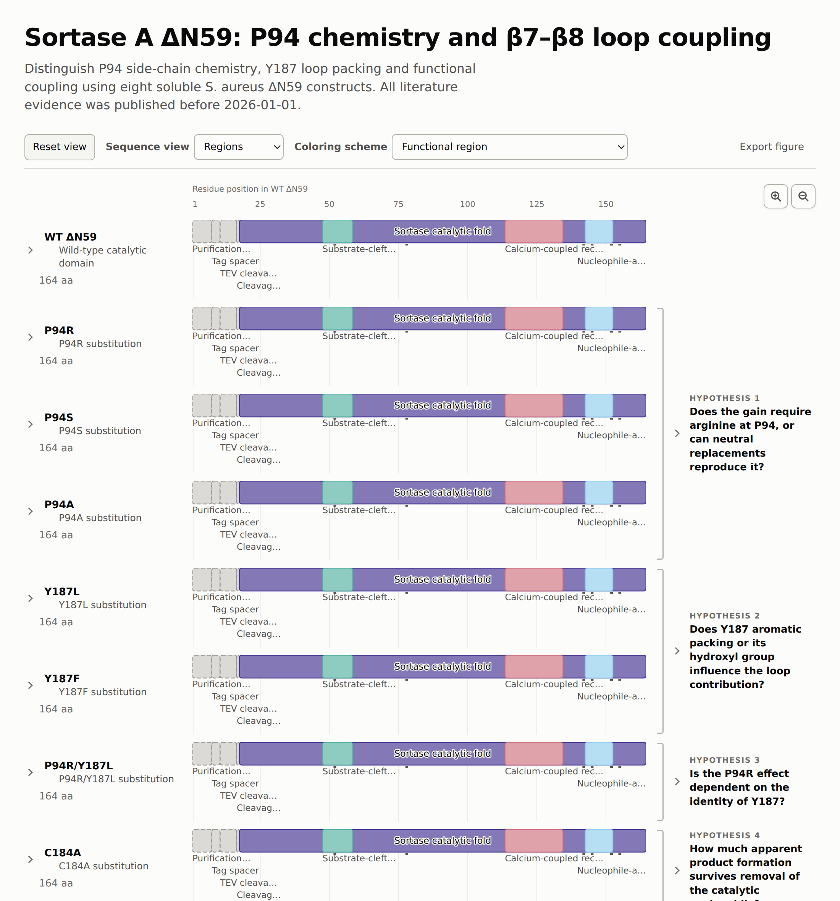
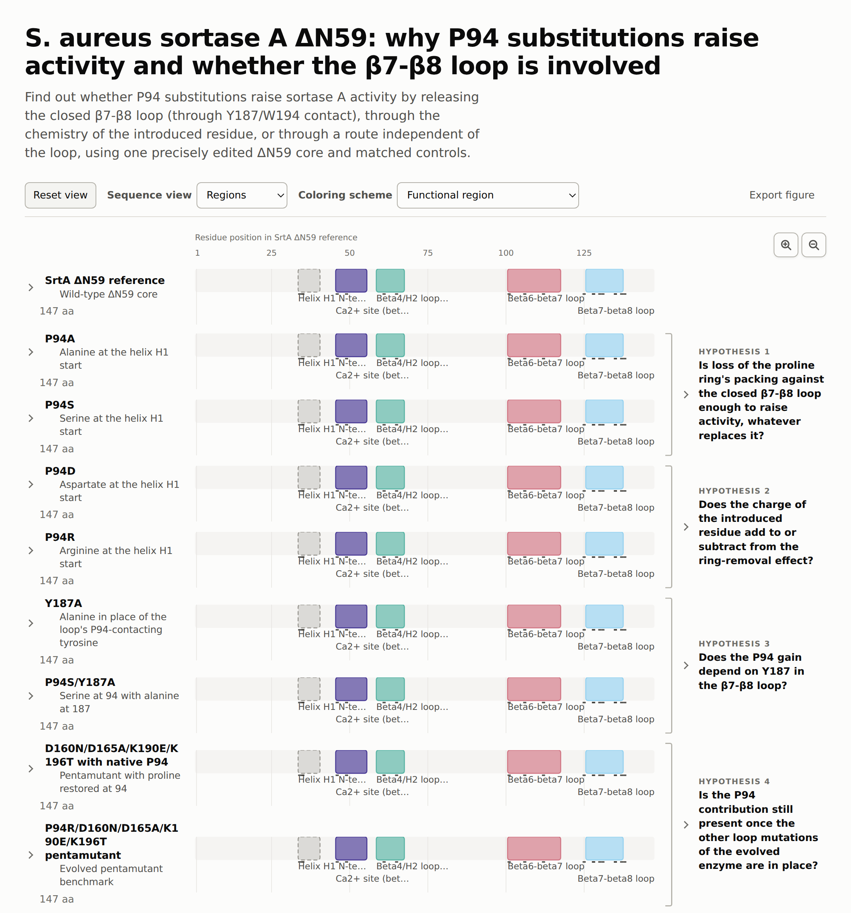

GPT 6.1 sol (high)
8 constructs (3 candidates, 4 controls, 1 reference) · 4 hypotheses · 7 cited sources, 6 checked against their identifiers
Construct Maps / Sortase A: why P94 substitutions raise activity
Why do substitutions at P94 raise the activity of Staphylococcus aureus sortase A, and is the β7-β8 loop involved?
Design a library of Staphylococcus aureus sortase A (ΔN59) variants to investigate why P94 substitutions raise activity and whether the β7-β8 loop is involved. Only use literature published before 2026-01-01.
Walkenhauer EG, … Amacher JF. Mutation-induced heterogeneity of the β7-β8 loop of the Staphylococcus aureus class A sortase leading to enhanced catalytic efficiency characterized by NMR and enzyme kinetics. bioRxiv, posted 24 August 2026. 10.64898/2026.08.21.746310
| Tested in the paper | GPT 6.1 sol (high) | Claude Sonnet 5.5 (high) |
|---|---|---|
| Wild-type saSrtAMaterials and methods: Protein expression and purification (the variant list); Figures 3 and 4 | Same edit wt | Same edit wt |
| P94DFigure 4 and Table 1 (kinetics); Results: NMR and kinetic analyses of LPATG peptide binding | Related p94r p94s p94aP94R, P94S and P94A instead | Same edit p94d |
| C184A, the catalytically inactive backgroundFigure 3 (C184A saSrtA, P94D/C184A saSrtA, C184A saSrtA5M) | Same edit deadon its own, without a P94 variant | Not proposed |
| P94D/C184AFigure 3B; Figures 5 and 6 | Not proposed | Not proposed |
| Y187AResults: Mutation of Y187 in saSrtA to interrogate the P94-Y187 interaction; Figure 2 | Related y187l y187fY187L and Y187F instead | Same edit y187a |
| Y187D and Y187RResults: Mutation of Y187 in saSrtA to interrogate the P94-Y187 interaction; Figure 2 | Related y187l y187fY187L and Y187F instead | Not proposed |
| saSrtA5M (P94R, D160N, D165A, K190E, K196T)Figure 4 and Table 1; the text states that saSrtA5M contains P94R plus four additional mutations | Not proposed | Same edit m5built from m4-p94 (the four other mutations) plus P94R |
| C184A saSrtA5MFigure 3C | Not proposed | Not proposed |
✓ the same edit · ~ related, a different change at the same place or the same idea · – not proposed. Constructs are named as in each library's record.

8 constructs (3 candidates, 4 controls, 1 reference) · 4 hypotheses · 7 cited sources, 6 checked against their identifiers

9 constructs (4 candidates, 4 controls, 1 reference) · 4 hypotheses · 12 cited sources, 11 checked against their identifiers